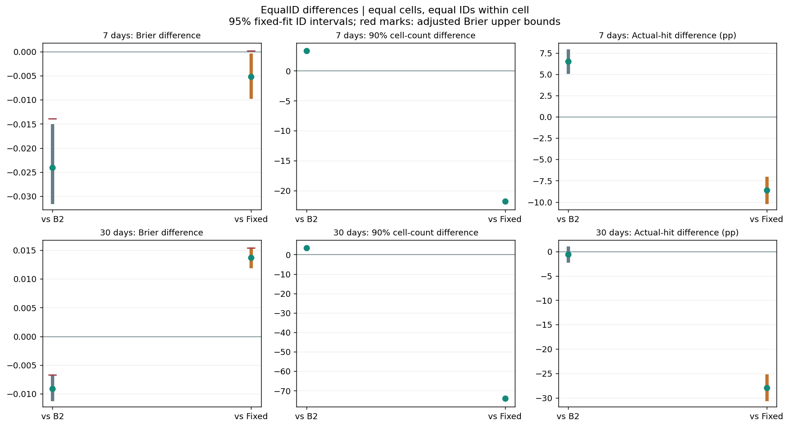
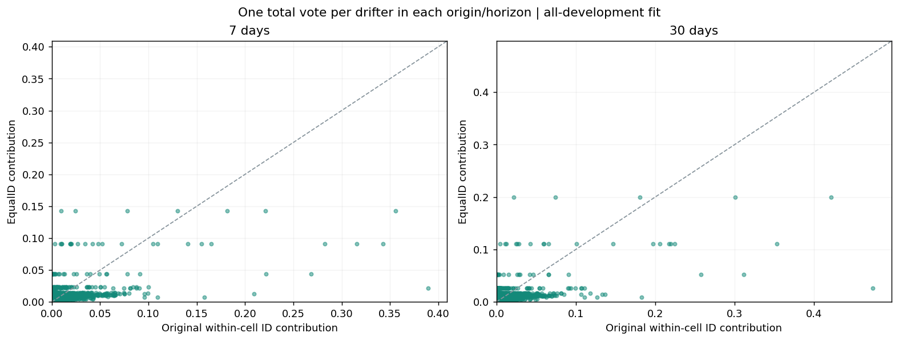
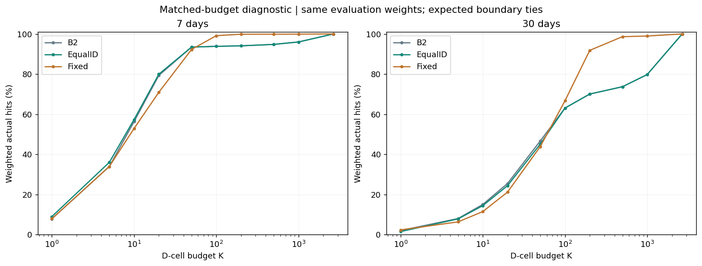
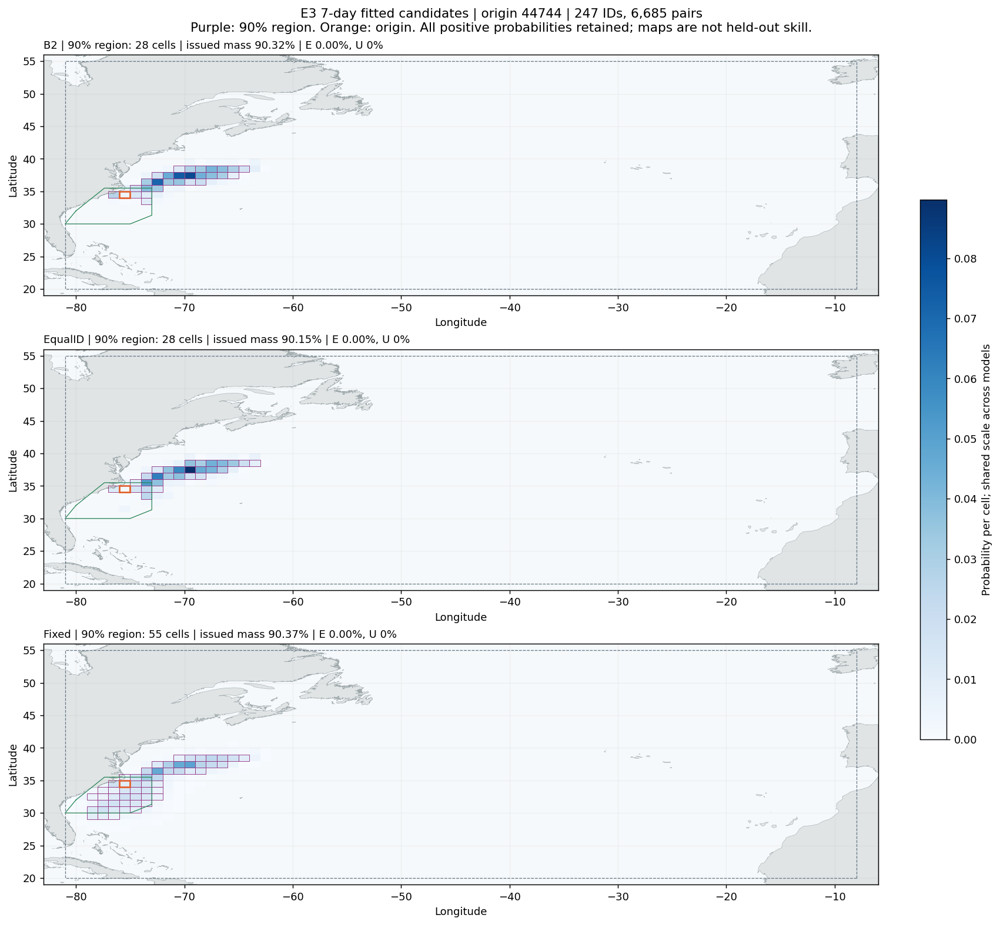
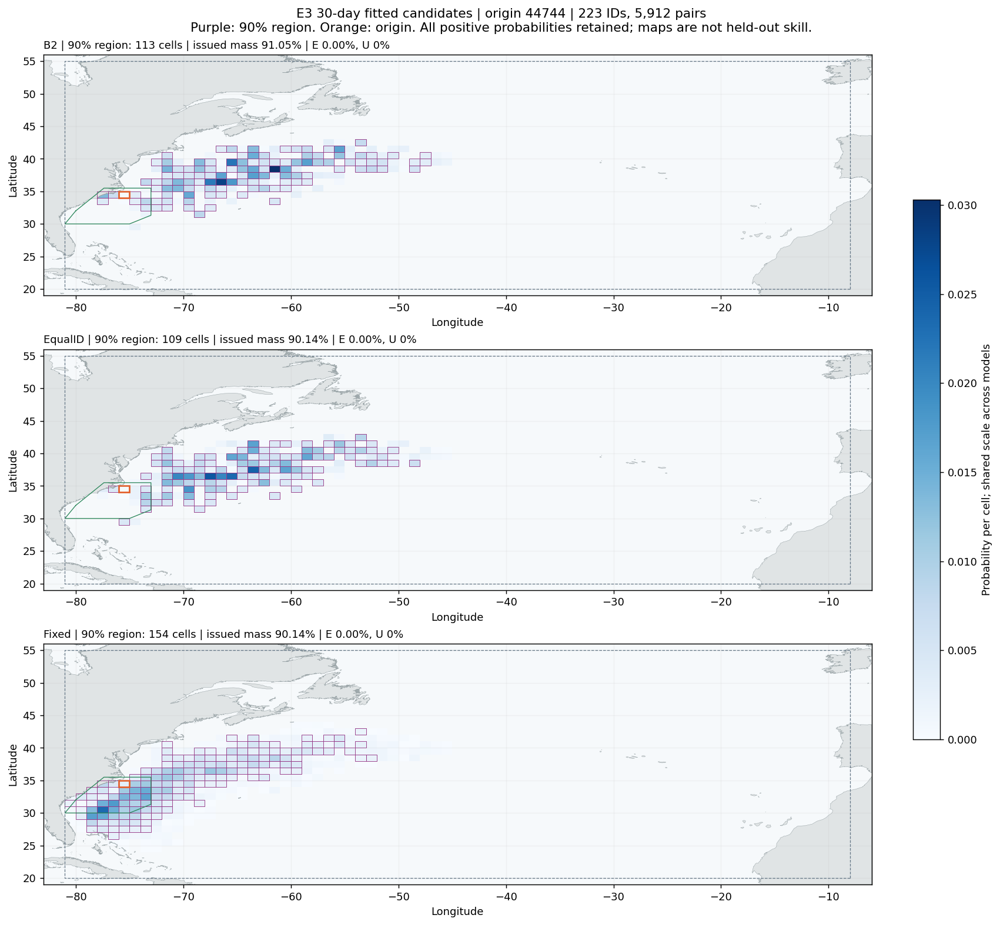

drifter_shrinkage_e3_20261030T074159_751985Z · Development evidence · Review pending
7 days, EqualID versus B2: conditional_development_Brier_support. Brier change -0.02403023; 90% cells +3.348; actual hits +6.531 percentage points. Region/hit trade-off: True.
7 days, EqualID versus Fixed: point_improvement_uncertain. Brier change -0.00519088; 90% cells -21.805; actual hits -8.587 percentage points. Region/hit trade-off: True.
30 days, EqualID versus B2: conditional_development_Brier_support. Brier change -0.00911665; 90% cells +3.355; actual hits -0.598 percentage points. Region/hit trade-off: True.
30 days, EqualID versus Fixed: no_measurable_Brier_gain. Brier change +0.01376666; 90% cells -73.932; actual hits -27.908 percentage points. Region/hit trade-off: True.
| horizon_days | model | evaluable_cells | evaluable_ids | evaluable_id_cells | evaluable_pairs | brier | region90_cells | target_availability | zero_true_probability | actual_hits_percent |
|---|---|---|---|---|---|---|---|---|---|---|
| 7 | B2 | 37 | 385 | 4451 | 303288 | 0.981297 | 17.558281 | 1.000000 | 0.063489 | 74.837783 |
| 7 | EqualID | 37 | 385 | 4451 | 303288 | 0.957266 | 20.906307 | 1.000000 | 0.063489 | 81.369216 |
| 7 | Fixed | 37 | 385 | 4451 | 303288 | 0.962457 | 42.711648 | 1.000000 | 0.001522 | 89.955848 |
| 30 | B2 | 37 | 337 | 3974 | 268998 | 1.017814 | 56.570651 | 1.000000 | 0.314331 | 50.276098 |
| 30 | EqualID | 37 | 337 | 3974 | 268998 | 1.008698 | 59.925714 | 1.000000 | 0.314331 | 49.677954 |
| 30 | Fixed | 37 | 337 | 3974 | 268998 | 0.994931 | 133.857527 | 1.000000 | 0.014935 | 77.586057 |
| horizon_days | model | reference | metric | difference | lower_95 | upper_95 | adjusted_upper | defined_replicates |
|---|---|---|---|---|---|---|---|---|
| 7 | EqualID | B2 | brier | -0.024030 | -0.031201 | -0.015363 | -0.013953 | 5000 |
| 7 | EqualID | B2 | region90_cells | 3.348026 | 3.313432 | 3.383497 | NaN | 5000 |
| 7 | EqualID | B2 | region90_hit | 0.065314 | 0.052528 | 0.077752 | NaN | 5000 |
| 7 | EqualID | Fixed | brier | -0.005191 | -0.009388 | -0.000660 | 0.000195 | 5000 |
| 7 | EqualID | Fixed | region90_cells | -21.805340 | -21.910230 | -21.683986 | NaN | 5000 |
| 7 | EqualID | Fixed | region90_hit | -0.085866 | -0.100078 | -0.072184 | NaN | 5000 |
| 7 | Fixed | B2 | brier | -0.018839 | -0.023857 | -0.012954 | NaN | 5000 |
| 7 | Fixed | B2 | region90_cells | 25.153367 | 25.042502 | 25.248406 | NaN | 5000 |
| 7 | Fixed | B2 | region90_hit | 0.151181 | 0.136563 | 0.166269 | NaN | 5000 |
| 30 | EqualID | B2 | brier | -0.009117 | -0.010979 | -0.006991 | -0.006721 | 5000 |
| 30 | EqualID | B2 | region90_cells | 3.355063 | 3.267298 | 3.444980 | NaN | 5000 |
| 30 | EqualID | B2 | region90_hit | -0.005981 | -0.019112 | 0.007458 | NaN | 5000 |
| 30 | EqualID | Fixed | brier | 0.013767 | 0.012166 | 0.015247 | 0.015430 | 5000 |
| 30 | EqualID | Fixed | region90_cells | -73.931813 | -74.396121 | -73.431970 | NaN | 5000 |
| 30 | EqualID | Fixed | region90_hit | -0.279081 | -0.302927 | -0.254703 | NaN | 5000 |
| 30 | Fixed | B2 | brier | -0.022883 | -0.025295 | -0.020071 | NaN | 5000 |
| 30 | Fixed | B2 | region90_cells | 77.286876 | 76.820454 | 77.710988 | NaN | 5000 |
| 30 | Fixed | B2 | region90_hit | 0.273100 | 0.250628 | 0.295745 | NaN | 5000 |
Hit differences in this table are fractions, not percentage points.




